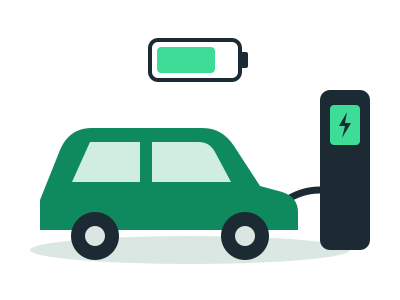

Com funciona
Bateria, autonomia real, tipus de connectors i diferències amb un cotxe de combustió.
Llegeix-ne més →Mobilitat sostenible a la ciutat
Vius en un pis sense garatge? Et fa por quedar-te sense bateria? T'expliquem com funciona el vehicle elèctric, on carregar-lo a Barcelona i quines ajudes pots demanar.

Bateria, autonomia real, tipus de connectors i diferències amb un cotxe de combustió.
Llegeix-ne més →Punts públics, càrrega al carrer i solucions per a qui viu en un pis sense plaça d'aparcament.
Llegeix-ne més →Pla MOVES, etiqueta 0 de la DGT i què implica la Zona de Baixes Emissions.
Llegeix-ne més →Calculadora d'estalvi elèctric vs. gasolina i simulador del temps de càrrega.
Prova-les →* Xifra orientativa que depèn de la tarifa elèctrica i del consum del vehicle. La calcularem amb dades reals a la calculadora.